Estimate Time-Varying Case Reproduction Number Using Wallinga-Lipsitch Method
Source:R/wallinga_lipsitch.R
wallinga_lipsitch.RdEstimates the time-varying case reproduction number (R_c) from daily incidence data using the method developed by Wallinga and Lipsitch (2007). The case reproduction number represents the average number of secondary infections generated by cases with symptom onset at time t, making it useful for retrospective outbreak analysis.
Usage
wallinga_lipsitch(
incidence,
dates,
si_mean,
si_sd,
si_dist = "gamma",
smoothing = 0,
bootstrap = FALSE,
n_bootstrap = 1000,
conf_level = 0.95,
shift = FALSE
)Arguments
- incidence
numeric vector; daily case counts. Must be non-negative integers or counts. Length must match
dates- dates
vector; dates corresponding to each incidence count. Must be the same length as
incidence. Can be Date objects or anything coercible to dates- si_mean
numeric; mean of the serial interval distribution in days. Must be positive. Typically estimated from contact tracing data or literature
- si_sd
numeric; standard deviation of the serial interval distribution in days. Must be positive
- si_dist
character; distribution family for the serial interval. Options:
"gamma"(default): Recommended for most applications as it naturally restricts to positive values"normal": Allows negative serial intervals, useful when co-primary infections are suspected
- smoothing
integer; window size for temporal smoothing of R estimates. Use 0 for no smoothing (default), or positive integers for moving average smoothing over the specified number of days
- bootstrap
logical; whether to calculate bootstrap confidence intervals. Defaults to
FALSE. Setting toTRUEincreases computation time but provides uncertainty quantification- n_bootstrap
integer; number of bootstrap samples when
bootstrap = TRUE. More samples provide more stable intervals but increase computation time. Defaults to 1000- conf_level
numeric; confidence level for bootstrap intervals, between 0 and 1. Defaults to 0.95 (95% confidence intervals)
- shift
logical; whether to shift R estimates forward by one mean serial interval. When
TRUE, adds ashifted_datecolumn for comparison with instantaneous reproduction number estimates. Defaults toFALSE
Value
A data frame with the following columns:
date: Original input datesincidence: Original input case countsR: Estimated case reproduction numberR_corrected: Case reproduction number with right-truncation correctionR_lower, R_upper: Bootstrap confidence intervals for R (ifbootstrap = TRUE)R_corrected_lower, R_corrected_upper: Bootstrap confidence intervals for R_corrected (ifbootstrap = TRUE)shifted_date: Dates shifted forward by mean serial interval (ifshift = TRUE)
Details
The method calculates the relative likelihood that each earlier case infected each later case based on their time differences and the serial interval distribution, then aggregates these likelihoods to estimate reproduction numbers. The approach makes minimal assumptions beyond specifying the serial interval distribution.
Key features:
Pairwise likelihood approach: Considers all epidemiologically plausible transmission pairs (earlier to later cases)
Right-truncation correction: Adjusts for unobserved future cases (see
calculate_truncation_correction)Bootstrap confidence intervals: Quantifies estimation uncertainty
Temporal shifting: Optional alignment with instantaneous R estimates
Flexible smoothing: User-controlled temporal smoothing of estimates
The Wallinga-Lipsitch method estimates the case reproduction number by:
Computing transmission likelihoods from each earlier case to each later case based on the serial interval distribution
Normalizing these likelihoods so they sum to 1 for each potential infectee
Aggregating normalized likelihoods to estimate expected secondary cases per primary case
Applying corrections for right-truncation bias
Right-truncation correction accounts for secondary cases that may occur
after the observation period ends (see calculate_truncation_correction). This correction is particularly important for recent cases in the time series.
Bootstrap confidence intervals are calculated by resampling individual cases with replacement, providing non-parametric uncertainty estimates that account for both Poisson sampling variation and method uncertainty.
Note
The case reproduction number differs from the instantaneous reproduction
number in timing: R_c reflects the reproductive potential of cases by their
symptom onset date, while instantaneous R reflects transmission potential
at the time of infection. Use shift = TRUE for comparisons with
instantaneous R estimates.
References
Wallinga J, Lipsitch M (2007). How generation intervals shape the relationship between growth rates and reproductive numbers. Proceedings of the Royal Society B: Biological Sciences, 274(1609), 599-604. doi:10.1098/rspb.2006.3754
See also
si_estim for serial interval estimation,
generate_synthetic_epidemic for testing data,
calculate_truncation_correction for right-truncation correction
Examples
# Example 1: Basic usage with synthetic data
set.seed(123)
dates <- seq(as.Date("2023-01-01"), by = "day", length.out = 30)
incidence <- c(1, 2, 4, 7, 12, 15, 18, 20, 22, 19,
16, 14, 11, 9, 7, 5, 4, 3, 2, 1,
rep(0, 10))
# Estimate reproduction number
result <- wallinga_lipsitch(
incidence = incidence,
dates = dates,
si_mean = 7,
si_sd = 3,
si_dist = "gamma"
)
# View results
head(result)
#> date incidence R R_corrected
#> 1 2023-01-01 1 18.651999 NA
#> 2 2023-01-02 2 9.587499 9.587576
#> 3 2023-01-03 4 5.705740 5.705825
#> 4 2023-01-04 7 3.529872 3.529970
#> 5 2023-01-05 12 2.253060 2.253175
#> 6 2023-01-06 15 1.466761 1.466898
# Example 2: With bootstrap confidence intervals
result_ci <- wallinga_lipsitch(
incidence = incidence,
dates = dates,
si_mean = 7,
si_sd = 3,
si_dist = "gamma",
bootstrap = TRUE,
n_bootstrap = 500 # Reduced for faster example
)
# Plot results with confidence intervals
if (require(ggplot2)) {
library(ggplot2)
ggplot(result_ci, aes(x = date)) +
geom_ribbon(aes(ymin = R_corrected_lower, ymax = R_corrected_upper),
alpha = 0.3, fill = "blue") +
geom_line(aes(y = R_corrected), color = "blue", size = 1) +
geom_hline(yintercept = 1, linetype = "dashed", color = "red") +
labs(x = "Date", y = "Reproduction Number",
title = "Time-varying Reproduction Number") +
theme_minimal()
}
#> Warning: Using `size` aesthetic for lines was deprecated in ggplot2 3.4.0.
#> ℹ Please use `linewidth` instead.
#> Warning: Removed 10 rows containing missing values or values outside the scale range
#> (`geom_ribbon()`).
#> Warning: Removed 11 rows containing missing values or values outside the scale range
#> (`geom_line()`).

# Example 3: With smoothing and shifting
result_smooth <- wallinga_lipsitch(
incidence = incidence,
dates = dates,
si_mean = 7,
si_sd = 3,
si_dist = "gamma",
smoothing = 7, # 7-day smoothing window
shift = TRUE # Shift for comparison with instantaneous R
)
# Example 4: Using normal distribution for serial interval
result_normal <- wallinga_lipsitch(
incidence = incidence,
dates = dates,
si_mean = 6,
si_sd = 2,
si_dist = "normal",
smoothing = 5
)